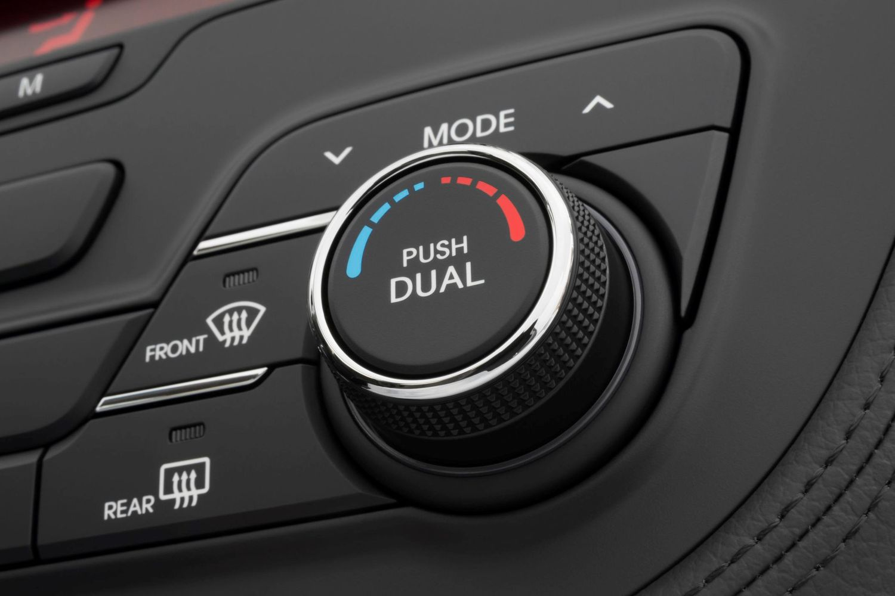

Climate control on a dashboard typically refers to the system that allows drivers and passengers to regulate the temperature and airflow within the vehicle's cabin. It usually consists of controls for adjusting the temperature, fan speed, air distribution (such as directing airflow to different vents), and sometimes additional features like defrosting or recirculating air. Modern vehicles often have sophisticated climate control systems that can automatically maintain a set temperature or adjust airflow based on various factors like outside temperature, sunlight intensity, and desired comfort levels.
TYPES OF CLIMATE CONTROL
* AIR CONDITIONING CONTROL
* HEATER CONTROLS
* DEFROSTER
* CLIMATE ZONES
1 AIR CONDITIONING CONTROL
The air conditioning control on a dashboard allows you to regulate the operation of the vehicle's air conditioning system. It typically includes controls for turning the air conditioning on or off, adjusting the fan speed, setting the desired temperature, and choosing the airflow direction. Some advanced systems may also offer additional features such as dual-zone climate control (allowing separate temperature settings for the driver and front passenger) or automatic climate control, which can maintain a set temperature automatically. The air conditioning control is essential for providing comfort to passengers by regulating the temperature and airflow within the vehicle cabin.

2 HEATER CONTROLS
Heater controls on a dashboard are responsible for regulating the heating system within a vehicle's cabin.
These controls allow you to adjust the temperature and airflow of the warm air circulating inside the vehicle. Typically, heater controls include options for turning the heater on or off, adjusting the fan speed, setting the desired temperature, and choosing the airflow direction (e.g., defrost, floor vents, dashboard vents).
In colder climates or during winter months, the heater controls play a crucial role in keeping passengers comfortable and maintaining visibility by defrosting windows. Some vehicles may also feature heated seats or steering wheels, which can be controlled through the same interface or separate controls on the dashboard.

3 DEFROSTER
The defroster control on a dashboard is a function designed to remove condensation, frost, or ice buildup from the vehicle's windows, primarily the windshield. It works by directing warm air onto the interior surface of the windshield, which helps to evaporate moisture and clear the glass for better visibility.
Typically, the defroster control will have options for the front windshield, rear windshield, and sometimes the side windows. When activated, the defroster system may also engage the air conditioning compressor to help remove moisture from the air, as drier air is more effective at clearing fogged or frosted windows.
In addition to manual controls, many modern vehicles also offer automatic defrosting features that activate when the vehicle detects moisture or low temperatures, enhancing convenience and safety for the driver.
The rear window defroster was invented by German automobile engineer Heinz Kunert.

4 CLIMATE ZONES
Climate zone control, also known as dual-zone climate control, refers to a feature in a vehicle's climate control system that allows different areas, or zones, of the vehicle's cabin to have independent temperature settings.
With climate zone control, passengers in different areas of the vehicle can set their own preferred temperature levels. For example, the driver and front passenger can set their desired temperatures independently of each other. This feature provides personalized comfort for everyone in the vehicle, as passengers can adjust the climate to their liking without affecting others.

In more advanced systems, there may be multiple climate zones, allowing passengers in the rear seats to have separate temperature settings as well. This feature is particularly useful in larger vehicles or those with multiple rows of seating.
Overall, climate zone control enhances comfort and convenience for all passengers by allowing them to tailor the temperature to their individual preferences.
Multi-zone climate control, also known as tri-zone or quad-zone climate control depending on the number of zones, refers to a feature in a vehicle's climate control system that allows for independent temperature control in different sections or zones of the vehicle's cabin. In a multi-zone climate control system:
* Dual-zone: Typically found in many vehicles, this system allows the driver and front passenger to set different temperature preferences for their respective sides of the cabin.
* Tri-zone: In addition to dual-zone control, a third zone is added, usually for rear passengers, allowing them to set their own temperature preferences independently from the front zones
* Quad-zone: This system extends the functionality further by adding a fourth zone, often for passengers in the third row in larger vehicles like SUVs or minivans.
Each zone typically has its own set of controls, which may include temperature adjustment knobs, buttons, or touchscreen interfaces, allowing passengers in each zone to tailor the climate settings to their individual comfort levels.
Multi-zone climate control enhances passenger comfort and satisfaction by providing personalized climate settings throughout the vehicle cabin, catering to the preferences of each occupant.